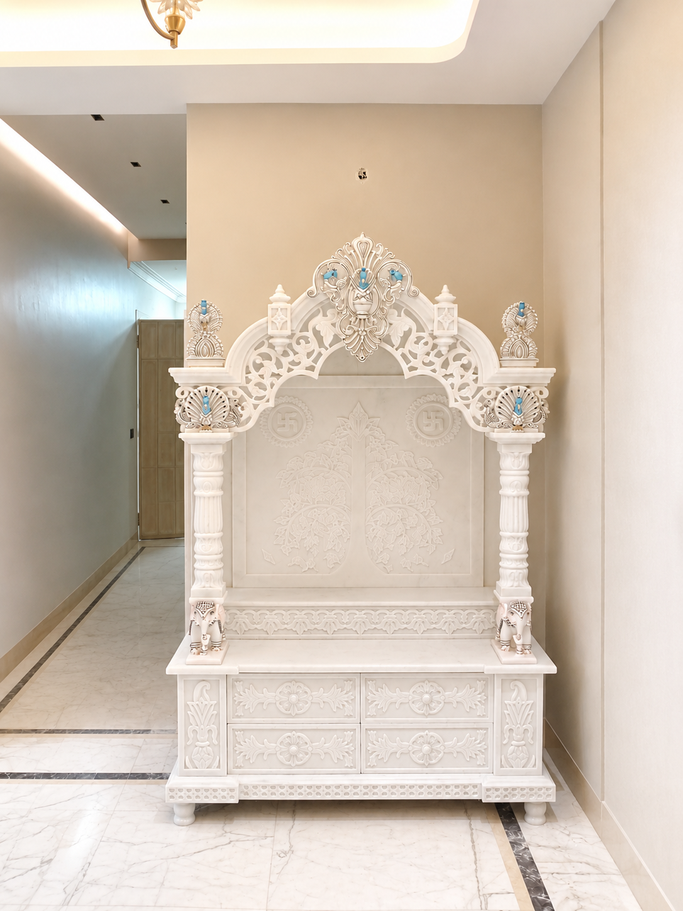
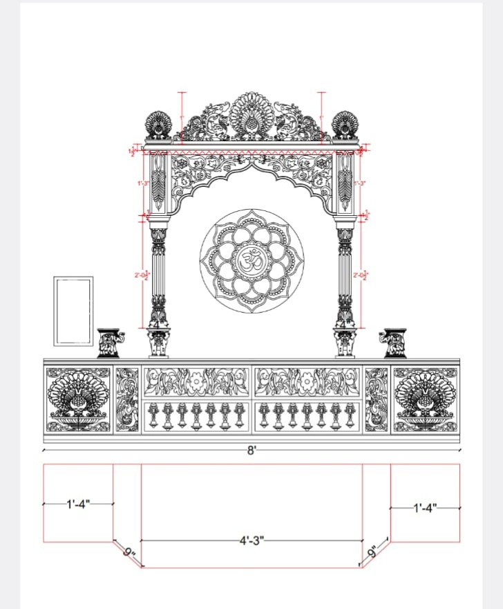
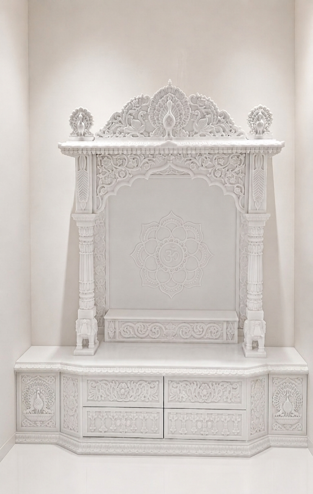

From a single block of Makrana marble to a mandir that holds your family's prayers — every arch, jaali and moorti is carved by hand in our Chandpole Bazar workshop.
Home & temple shrines — from compact wall mandirs to full jharokha-style installations.
02Radha Krishna, Ram Darbar, Durga Maa & other deities carved and hand-painted.
03Peacock-crest thrones and platforms sized to seat your moorties with dignity.
04Jaali panels, crest pieces, urns and decorative carvings for gifting or interiors.
We prepare a scaled CAD elevation first — every arch, jaali and carving marked out — so what you approve on paper is exactly what arrives at your door.


The classic temple marble — dense, luminous and built to last.
A brighter, uniform white for a clean, contemporary mandir finish.
Warm dune-gold tones, ideal for outdoor and courtyard temples.
A deep, regal accent stone used for borders, pillars & singhasan bases.
“We sent Pratima Mandir a photo of our old family temple and they rebuilt it in marble, jaali for jaali. It sits in our hallway now like it was always meant to be there.”
Visit our workshop in Chandpole Bazar or send us your requirements — we'll prepare a free design concept.